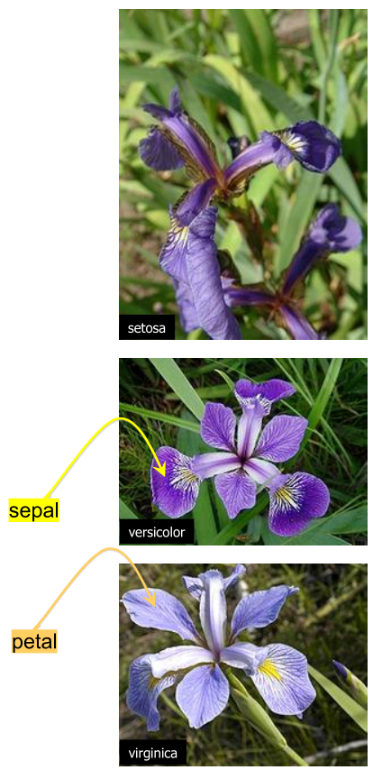
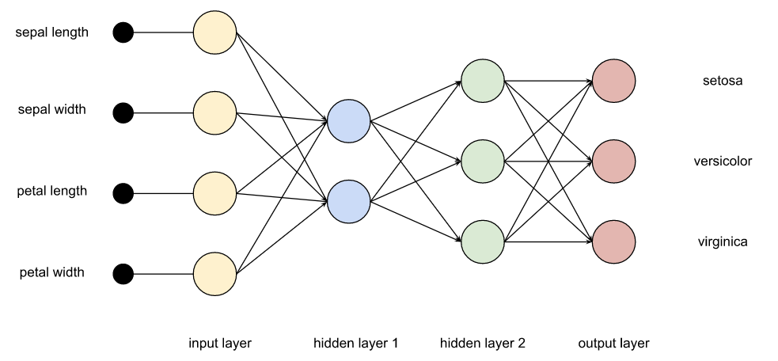
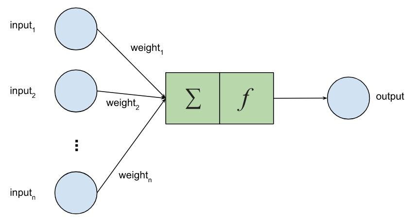

Using TensorFlow from Apache Wayang

Published: 2025-02-28 09:30AM

-
Clustering whisky flavor profiles using Apache Wayang’s cross-platform machine learning with Apache Spark
-
Classifying iris flowers with Deep Learning and GraalVM
-
Classifying iris flowers using the Oracle 23ai Vector data type
Let’s look at classifying iris flowers using Apache Wayang and TensorFlow with Groovy
We’ll look at an implementation heavily based on the Java test in the Apache Wayang repo.
First, we’ll define a map of string constants to label values.
var LABEL_MAP = ["Iris-setosa": 0, "Iris-versicolor": 1, "Iris-virginica": 2]Now we can create a helper method to define the operators we’ll use to convert from our test and training CSV files into our datasets. Operators are the chunks of work that can be allocated to our processing platform. Ultimately, we’ll have a graph of operators that form our plan of work.
def fileOperation(URI uri, boolean random) {
var textFileSource = new TextFileSource(uri.toString()) // (1)
var line2tupleOp = new MapOperator<>(line -> line.split(",").with{ // (2)
new Tuple(it[0..-2]*.toFloat() as float[], LABEL_MAP[it[-1]])
}, String, Tuple)
var mapData = new MapOperator<>(tuple -> tuple.field0, Tuple, float[]) // (3)
var mapLabel = new MapOperator<>(tuple -> tuple.field1, Tuple, Integer) // (3)
if (random) {
Random r = new Random()
var randomOp = new SortOperator<>(e -> r.nextInt(), String, Integer) // (4)
textFileSource.connectTo(0, randomOp, 0)
randomOp.connectTo(0, line2tupleOp, 0)
} else {
textFileSource.connectTo(0, line2tupleOp, 0)
}
line2tupleOp.connectTo(0, mapData, 0)
line2tupleOp.connectTo(0, mapLabel, 0)
new Tuple<>(mapData, mapLabel)
}-
TextFileSourceconverts a text file into lines -
line2tupleOpconverts a line into a Tuple containing ourfloat[]data infield0and anIntegerlabel infield1 -
We also have
mapDataandmapLabeloperators for getting the two parts from our Tuple -
We can optionally randomly sort the incoming dataset
We’ll use that helper method to create our test and training data sources:
var TEST_PATH = getClass().classLoader.getResource("iris_test.csv").toURI()
var TRAIN_PATH = getClass().classLoader.getResource("iris_train.csv").toURI()
var trainSource = fileOperation(TRAIN_PATH, true)
var testSource = fileOperation(TEST_PATH, false)We can now write the rest of our script. First, we’ll define features and labels:
Operator trainData = trainSource.field0
Operator trainLabel = trainSource.field1
Operator testData = testSource.field0
Operator testLabel = testSource.field1Next up, we’ll define a model for our deep-learning network. Recall that such networks have inputs (the features), one or more hidden layers, and outputs (in this case, labels).

The nodes can be activated by linear or non-linear functions.

We’ll have 4 inputs going to 32 hidden nodes to 3 outputs with Sigmoid activation. These classes are all platform-agnostic. Nowhere here do we mention TensorFlow or use any TensorFlow classes.
Op l1 = new Linear(4, 32, true)
Op s1 = new Sigmoid().with(l1.with(new Input(Input.Type.FEATURES)))
Op l2 = new Linear(32, 3, true).with(s1)
DLModel model = new DLModel(l2)We define a platform-agnostic deep learning training operator, providing some needed options, that will do our training.
Op criterion = new CrossEntropyLoss(3).with(
new Input(Input.Type.PREDICTED, Op.DType.FLOAT32),
new Input(Input.Type.LABEL, Op.DType.INT32)
)
Optimizer optimizer = new Adam(0.1f) // optimizer with learning rate
int batchSize = 45
int epoch = 10
var option = new DLTrainingOperator.Option(criterion, optimizer, batchSize, epoch)
option.setAccuracyCalculation(new Mean(0).with(
new Cast(Op.DType.FLOAT32).with(
new Eq().with(new ArgMax(1).with(
new Input(Input.Type.PREDICTED, Op.DType.FLOAT32)),
new Input(Input.Type.LABEL, Op.DType.INT32)
))))
var trainingOp = new DLTrainingOperator<>(model, option, float[], Integer)Now we’ll define a few more operators to work out and collect results:
var predictOp = new PredictOperator<>(float[], float[])
var bestFitOp = new MapOperator<>(array ->
array.indexed().max{ it.value }.key, float[], Integer)
var predicted = []
var predictedSink = createCollectingSink(predicted, Integer)
var groundTruth = []
var groundTruthSink = createCollectingSink(groundTruth, Integer)With operators defined, let’s connect them together (define our graph of work):
trainData.connectTo(0, trainingOp, 0)
trainLabel.connectTo(0, trainingOp, 1)
trainingOp.connectTo(0, predictOp, 0)
testData.connectTo(0, predictOp, 1)
predictOp.connectTo(0, bestFitOp, 0)
bestFitOp.connectTo(0, predictedSink, 0)
testLabel.connectTo(0, groundTruthSink, 0)Let’s now place everything in a plan and execute it:
var wayangPlan = new WayangPlan(predictedSink, groundTruthSink)
new WayangContext().with {
register(Java.basicPlugin())
register(Tensorflow.plugin())
execute(wayangPlan)
}
println "predicted: $predicted"
println "ground truth: $groundTruth"
var correct = predicted.indices.count{ predicted[it] == groundTruth[it] }
println "test accuracy: ${correct / predicted.size()}"When run we get the following output:
Start training: [epoch 1, batch 1] loss: 6.300267 accuracy: 0.111111 [epoch 1, batch 2] loss: 2.127365 accuracy: 0.488889 [epoch 1, batch 3] loss: 1.647756 accuracy: 0.333333 [epoch 2, batch 1] loss: 1.245312 accuracy: 0.333333 [epoch 2, batch 2] loss: 1.901310 accuracy: 0.422222 [epoch 2, batch 3] loss: 1.388500 accuracy: 0.244444 [epoch 3, batch 1] loss: 0.593732 accuracy: 0.888889 [epoch 3, batch 2] loss: 0.856900 accuracy: 0.466667 [epoch 3, batch 3] loss: 0.595979 accuracy: 0.755556 [epoch 4, batch 1] loss: 0.749081 accuracy: 0.666667 [epoch 4, batch 2] loss: 0.945480 accuracy: 0.577778 [epoch 4, batch 3] loss: 0.611283 accuracy: 0.755556 [epoch 5, batch 1] loss: 0.625158 accuracy: 0.666667 [epoch 5, batch 2] loss: 0.717461 accuracy: 0.577778 [epoch 5, batch 3] loss: 0.525020 accuracy: 0.600000 [epoch 6, batch 1] loss: 0.308523 accuracy: 0.888889 [epoch 6, batch 2] loss: 0.830118 accuracy: 0.511111 [epoch 6, batch 3] loss: 0.637414 accuracy: 0.600000 [epoch 7, batch 1] loss: 0.265740 accuracy: 0.888889 [epoch 7, batch 2] loss: 0.676369 accuracy: 0.511111 [epoch 7, batch 3] loss: 0.443011 accuracy: 0.622222 [epoch 8, batch 1] loss: 0.345936 accuracy: 0.666667 [epoch 8, batch 2] loss: 0.599690 accuracy: 0.577778 [epoch 8, batch 3] loss: 0.395788 accuracy: 0.755556 [epoch 9, batch 1] loss: 0.342955 accuracy: 0.688889 [epoch 9, batch 2] loss: 0.477057 accuracy: 0.933333 [epoch 9, batch 3] loss: 0.376597 accuracy: 0.822222 [epoch 10, batch 1] loss: 0.202404 accuracy: 0.888889 [epoch 10, batch 2] loss: 0.515777 accuracy: 0.600000 [epoch 10, batch 3] loss: 0.318649 accuracy: 0.911111 Finish training. predicted: [0, 0, 0, 0, 0, 1, 1, 1, 1, 1, 2, 2, 2, 2, 2] ground truth: [0, 0, 0, 0, 0, 1, 1, 1, 1, 1, 2, 2, 2, 2, 2] test accuracy: 1
There is an element of randomness in our use case, so you might get slightly different results for each run.
We hope you learned a little about Apache Groovy and Apache Wayang! Why not get involved!